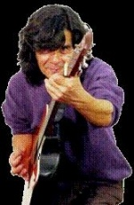

Algeciras
 De: La Frikipedia, la enciclopedia extremadamente seria.
De: La Frikipedia, la enciclopedia extremadamente seria.
| De la serie ciudades del mundo:
|
| Algeciras
|
|
|

|
| (Bandera)
|
(Escudo de armas)
|
|
| Topónimo oficial
|
Capital peninsular del porro, Aesira mare, AlgeTown, El mojón del culo de Europa, ROTONDATOWN
|
| País
|
Donde España y Marruecos, son uno.
|
| Código postal
|
1120X (si X=7, significa que vives en San García y tu familia es más o menos acomodada, si no, puedes ser de cualquier otro barrio de Algeciras (osea, un barrio chungo, menos San Bernabé)
|
| Superficie
|
Si contamos el puerto, 2 veces Madrid
|
| Altitud
|
¿? Acaso importa cuando el Rinconcillo, barrio playero, se inunda cuando caen 4 gotas¿?
|
| Distancia
|
Da igual, todo está lejos. Si total, una autovía con semáforos y un ferrocarril de 150 años.. ¿Realmente importan las distancias? O el tiempo, más bien que el tren tarda 5 horas en recorrer 180 kms hasta Granada
|
| Fundación
|
Incierto, la ciudad se ha edificado sobre ruinas y, si quisiéramos buscarlas, Algeciras dejaría de existir. Aunque se le podría hacer a los edificios del Secano la prueba del C-14, al fin y al cabo, Algeciras es eso: una Ruina
|
| Población
|
120.000 CENSADOS
|
| Gentilicio
|
Algecireño/a, Especial, Bajunos, “PiojoZoh ustedes” (Argumentación de uno de La Línea
|
| Alcalde
|
Mientras no sea del PP, da igual... como si tiene que ser la de Gran Hermano
|
| “Cariño, déjame ponerte una rotonda en el salón... QUE NO PATRICIO!”.
|
Algeciras es probablemente y, con absoluta seguridad, la ciudad más aburrida del mundo.
Esto se debe a la peculiaridad de sus ciudadanos y sobre todo, a que aquí no hay ná de ná. Por no haber no hay ni cine, desde que abrieron el Cine Cité, lo que fue una vez orgullo de la ciudad (El multicines de las palomas), ahora es un Wok demasiado grande y demasiado vacío. Pero si Algeciras se ha ganado el título de ciudad ABURRIDISIMA es, sobre todo por lo que a las discotecas respecta. En los años 80, la ciudad tenía vida social, juventud, espíritu. Ahora, existen 2 discotecas, pero lo MEJOR es que, cuando abren una nueva, no es que sea nueva, sino que han cerrado una de las 2 que ya había y se le cambia el nombre YASTA! Así, Generatriz ahora es Premiere (Vaya nombre fashion para una discoteca en Algeciras) y el local colindante, yo lo conocí como Belvet, pero ha sido Mulata, Goa, Mamajuana... Así de cutres somos. Y es que, en Algeciras TODO se hace mal, 15 años se tardó en construir una ronda de 9 kilómetros de circunvalación que, para colmo, tiene semáforos (Una autovía con semáforos!?!?!?) La Historia de Algeciras (Aesira de Aesira Mare) es la Historia de su Puerto, grande de cojones, Compite con Gibraltar para ver quien jode antes la Bahía de Algeciras, si no está ya jodida le podéis preguntar a los delfines que vivían ahí tan ricamente hasta que les echaron al Estrecho. La Historia de Algeciras es la historia del paso de cientos de personas, eso si, por allí pasan millones al año, pero todos prefieren irse a Marruecos o a Tarifa, hay que ser o muy Cani o muy moro para quedarse aquí.
La Economía de Algeciras está basada en los productos de la tierra vecina, importación y venta al por mayor..., porque a ver, la refinería es de San Roque, el cine y la otra parte del polígono industrial es de Los Barrios, las playas wapas están en Tarifa, pues digamos que la economía de Algeciras es la de los curritos que trabajan en otros municipios como La Línea, Los Barrios o San Roque, porque Algeciras no tiene na de na. Recomendamos un paseo por Algeciras un domingo, Día del Señor. Si vas al Centro, te sentirás como el Noriega en Abre los Ojos, y no solo el domingo, sal a la calle cualquier día después de las 9, cuando los comercios cierran. Todo el mundo vuelve a su guarida. Y es que los algecireños prefieren ver La noria, o Donde estás corazón e interesarse por la vida de la Esteban porque fuera no van a encontrar nada mejor.
Algeciras no tiene na de na, pero alrededor si, veamos, en Los Barrios está el UGC Sine Sité donde puedes ir con tu txurri a ver una peli, además está al lao del Factory, grandes almacenes donde los canis y las jessis Bajunos (aquí se les dice Bajunos) se pueden equipar de chandals con colores horteras de última generación. También está Tarifa, ciudad de Guzmán El Bueno, donde si no te lleva el viento puedes salir por la noche y disfrazarte de fashion megaway, o ser un bajuno más de los muchos que hay. Gibraltar, que vamos a decir de Gibraltar, ve a darle cacahuetes a los monos, ojo, no te confundas con los autóctonos, son muy parecidos y hablan igual. De la Línea mejor ni hablemos, es la capital de MundoBajuno por excelencia, es la eterna envidia de Argesira. lo que en realidad pasa, es que les molesta tener que viajar hasta la tierra vecina rival para poder ir al Corteinglé. y así hasta un largo etcétera, pero mola porque puedes irte a la plaza a ver pegarse a llanitos (gibraltareños) contra bajunos locales sin domesticar.
Ahora toca hablar del orgullo Algecireño: Su feria y sus porros. En primer lugar, todos los algecireños esperan como agua de Mayo (y eso que la feria es en Junio) su feria. Creen que es de las mejores de España, pero es una mierda, una mierda muy grande. Está llena de bajunos, mierda de caballo y pijas vestidas de gitanas hasta el culo de rebujito potando como condenadas en las escaleras al lado de la churrería. Además, cada año la puerta de la feria es más HORTERA, y si a eso le sumas el monumento a la pandereta... tienes una postal ideal para enviar a un familiar. Por otro lado, Todo buen algecireño que viaja y sale fuera de Algeciras (porque, aunque no lo creas, Algeciras es un agujero del que es difícil salir) tiene que hablar de los porros.
- Ey tío, ¿Has probado este chocolate tan rico que tengo?
- Bua "pisha" a mi que me va decí, zi yo zoy D'argecira
En cuanto a los deportes, el único éxito del deporte algecireño es el Balonmano, que estaba luchando con los mejores en la Asobal. Ahora desaparecieron o no sé que polladas, y fundaron otro aún peor y más malo. En Furbol, cada año pierden una categoría desde que no hace mucho militaran en la segunda y la mayoría de seguidores son en realidad del club de La Linea porque según dicen "¡¡eeoejdlsalfdk a mi déjame en paz!!". Cuentan las leyendas que una vez un futbolista algecireño que jugaba en La Linea llegó a jugar en primera, se llamaba Mané. En Baloncesto, como son así de torpes en el Ayuntamiento, tenían un equipo en la LEB pero tuvieron que vender la plaza, algo que casi ocurre con el balonmano. Y de otros deportes no se na, si alguien lo sabe, que lo ponga.
Los algecireños también tenemos por costumbre acudir a los eventos deportivos cuando el equipo está apunto de ascender a alguna categoría superior (Esto ocurre cada.. pff no me acuerdo) Pero en fin, que durante el transcurso de la temporada no se acuerda ni el tato de que hay algún deporte "Profesional" en Algeciras.
Podemos encontrar las pistas de atletismo, donde casi siempre hay cuatro gratos entrenando. Y al lado está situado las pistas de "Skate" donde la gente se pone a hacerse fotos, la mayoría son Skaters que se hacen los guays.
Al lado, está el club de petanca, lugar perfecto para aquellos jubilados (Que la mayoría de algeciras son viejos).
Todo muy bien situado, si señor (Ironía), en el quinto carajo y encima al lado del cementerio, ya sabes si te partes la nunca haciendo skate y si te da un infarto jugando a la petanca, el cementerio está más cerca que nunca. Eso si, si pasas por al lado huele a quemado, no quiero decir nada con eso..
División administrativa
Algeciras está compuesta por 16 barrios, 2 de ellos, pijos, situados a los extremos, un centro y circunvalando a este, el resto de los mismos. De sur a norte, los barrios son:
- Getares: Getares es la playa “bonita” de Algeciras (aunque cuando hace levante te bañas en una sopa de bolsas y compresas);y se divide en dos partes: Getares y Getares B. Es un barrio fantasma en invierno y extremadamente poblado en verano. Esto se debe a que, el 98% de los comercios que hay en el barrio son chiringuitos y restaurantes (el 2% restante lo constituye la farmacia y la panadería “Selva”. En Getares se encuentra el “IKEBANA”, nuevo pub veraniego donde se reúne todo el bajunerío campogibraltareño en el cual, si no le caes bien al portero, te pedirá 18; si tienes 18 te pedirá 21, y si tienes 21 te pedirá mujer e hijos. Getares es un barrio monocromo (de un solo color) porque todas, si si, TODAS (o el 99'9%) de sus casas son de color naranja rojizo y, se divide en varios núcleos o fases en las cuales, TODAS (si, si, TODAS) sus casas son iguales: Special Getares, Los delfines I y II, residencial “Playa Getares”, Los camarotes, Las terrazas, Constelaciones, y sobretodo La Aldea (I, II, III, IV, V, VI, MDCCCXCIX...) y sus millones de casas. Por otro lado, encontramos Getares B, más conocido como “Punta Carnero” o “El faro” el cual, está separado 3 kilómetros de Getares por una carretera de 50 centímetros de ancho la cual, cada vez está más cerca de acabar en el fondo del acantilado. Allí viven unos cuantas personas en unas chozas impresionantes con terrenos de 2000 metros cuadrados pero, que no valen tanto porque tarda menos uno de Leganés en llegar a la Puerta del Sol de Madrid que uno de Punta Carnero en llegar al centro de Algeciras.
- San García (11207): Es un barrio “pijo” (no es pijo, es lo mejor dentro de lo peor) del sur de la ciudad. San García se puede dividir en varios sectores: A la izquierda de la Carretera de Getares, San García rico, donde puedes encontrar los chalets más increíbles de la ciudad y, a la derecha, San García “pobre” donde hay adosados, pareados y algún chalet también. Más a la derecha encontramos el Sotorebolo, una macro-urbanización creada en los últimos años donde el 80% de las viviendas estás desocupadas y con un letrero de “se vende”. Un claro ejemplo del final del boom inmobiliario y de la especulación. San García hace 30 años era campo, solo estaba el Hospital, y unas 20 viviendas; hoy es el barrio más grande y más poblado en el que el 50% de la población lo constituye la tercera edad, ya que aquí se encuentran los asilos, otro 40% lo constituye enfermos (está el hospital) y el resto, es gente normal. Es un barrio en el que conviven pijos y bajunos.Dentro de San García se encuentran los colegios más selectos de Algeciras: Montecalpe y Puerto blanco, cada vez con más extranjeros procedentes del norte de Europa. El resto de la gente va a los Colegios San García o Caetaria y al instituto El Getares (probablemente el instituto con más gente por metro cuadrado que haya visto en mi vida).
- La Juliana:* El barrio más pequeño, en el viven los “medio-mulos”, cuyas manos son más grandes que la superficie del mar Mediterráneo. Las calles tienen nombres como “Pansequito”, “Isabel Pantoja”, “Camarón de la isla” o “Lola Flores”. Sin embargo, los medio-mulos son gente maja, viven en paz y no suelen ir buscando pelea, ahora, no los provoques porque del manotazo que te meten acabas en lo alto del peñón de Gibraltar con los monos. Hay una teoría que reposa en la certeza de que, la Juliana es la aldea de una única familia, una raza única previa a la fundación de la propia ciudad.
- Pescadores: Es el típico barrio de casas pequeñas característico de zonas costeras y no hay mucho que contar sobre él. Es un barrio de gente humilde con gran importancia en la zona sur de Algeciras ya que en él se encuentra el kiosko-casa que suministra bombonas de butano al sector
- Saladillo: El barrio chungo por excelencia de Algeciras, no es el peor de todos (porque no hay ninguno más chungo que otro). Es el barrio en el que viven la mayoría de gitanos de la ciudad y el barrio que más destrozado está. Si vas en el Bus, los niños te lanzarán piedras desde lo alto del tejado del bar de Romino. El Saladillo es el barrio en el que siempre había estado el mercadillo, hasta que se lo llevaron al llano amarillo y después al ferial. Antiguamente en una esquina, había una anciana sentada en un carrito de la compra que, cada vez que pasaba el autobús se ponía a bailar... pero debió de fallecer o recuperar la cordura. También está el Saladillo viejo un barrio que no es tan marginal, pero todo tiene su explicación, en este territorio viven 100 viejos al metro cuadrado por lo que las movidas de drogas estan legalizadas en la farmacia, solo queda un niño menor de edad, es la esperanza del barrio, todos esperan que tenga 496 hijos para que todo el territorio no acabe en ruinas
- Los pastores: Es un barrio pequeño. Se trata 4 calles colindantes a una carretera. En el 2010 pusieron un mardonals.
- El Cobre: Un barrio grande de cojones en el que es normal que, el que no es de ahí se pierda porque allí no hay nada, solo casas y la carnicería de cucarrete. Se encuentra separado de la ciudad por una carretera estrechísima que ahora está llena de casas. Además, los pobres están encabronados porque el trazado de la nueva circunvalación (si, esa que tardará otros 15 años en llegar) pasará por el centro del barrio.
- La piñera: El barrio más valenciano de Algeciras, y digo valenciano porque es normal ver “fallas” en el mismo solo que, estas fallas no son de cartón-piedra, sino de hierro, goma, plástico, gasolina etc. y se llaman Renault, Citroen, Seat...
- Barrio del Puerto: En este barrio, viven 300 moros por metro cuadrado, la industria del locutorio, la del shawarma y la de los bazares. Ahí también se encuentra el mercado de abastos y la estación central de autobuses (tanto urbanos como interurbanos) y la Renfe. Limita con el puerto y también la calle de las putas se encuentra ahí. Su personaje más ilustre y gobernadora es la puta "Boca Blanca" (también conocida como "La Predator").
- CENTRO: El centro de la ciudad es un centro grande de cojones. Dentro del centro está San Isidro, el barrio típico y hogar del cristo de Medinaceli. En el centro esta la calle ancha que es donde queda todo el mundo (Calle ancha = Mardonals). Aquí es donde la corrupción urbana alcanza sus cotas máximas cuando se permite construir edificios a solo 25 metros de unas ruinas árabes (Claro!, los árabes acabaron la ciudad justo ahí!) y donde está la sede de los 5 ayuntamientos de la ciudad (SI!, SOMOS ESPECIALES! ALGECIRAS TIENE 5 AYUNTAMIENTOS!)
- La Bajadilla: Es quizás el segundo barrio más grande de la ciudad. Es el barrio natal de Paco de Lucía. Existe un movimiento secesionista que pretende la independencia de La Perlita como barrio autónomo e independiente. En un 40% son seres humanos "normales" (dentro de la especie algecireña); el resto, que suele vivir en la parte de "detrás de la iglesia", son especímenes en estudio, aun sin catalogar.
- Carretera a Cádiz-Málaga: Más que barrio, es una zona. Puedes encontrar el colegio Puerta del Mar (fácil de saltar el muro que lo rodia e ideal pa liarse un porrito, pisha), el Calvario (un polideportivo abandonado donde casi to los meses hay fuego)y los institutos IES Baelo Claudia e IES Isla Verde (que cumplió 40 años este año, y está tal cual se inauguró, por lo que se cae a pedazos). Es un barrio raro, con una urbanización llamada Villa Romana, donde hay una plazoleta donde los enanos imaginan porterías. También están los Sauces, que es una mierda, y las Mimosas, que es otra mierda. También puedes encontrar el llano de la feria, con un parque cutre y "Chuchelandia", paraíso de cleptómanos. También está el gulus, pa tomarte un helaito y donde en verano es difícil poder sentarte en el muro que hay enfrente, debido a que está lleno de helado o hay gente sentada. Si subes, llegarás a las Colinas, un barrio "pijo".
- San Bernabé: En los inicios, existía una colina. Esa colina empezó a urbanizarse configurándose el germen que daría lugar a la barriada gigante de San Bernabé. Tierra de contrastes, su núcleo central es el famoso “Lianxy”, donde existe una pequeña mafia muy familiar. También es este barriada cuando pasa algo interesante, en una tarde ya lo sabe la barriada entera. Nos encontramos también chalets y adosados bastante acomodados y una cantidad de pisos descomunal. El que otrora fuera el orgullo algecireño, el multicines también esta ahí (ahora es un Wok), y la discoteca SUPER MAGNA ÉLITE, donde personajes ilustres (las gemelas de GH, el negro de GH, Cabano...) la suelen visitar de vez en cuando. También está el Eroski que ocupa un 89% del barrio solo en aparcamientos. Es un barrio lleno de paz y armonía, parques, vistas preciosas de montañas, es de los pocos o el único barrio de algeciras donde se puede ir tranquilo por la calle sin que los putos canis de mierda te entren con alguna de sus gilipolleces... pero aun así, cuidado. (Sobretodo en las escaleras esas grandes pegadas al parquecito por la noche...y en feria mejor tirar por otro sitio)
- La Reconquista: Un barrio que comunica con el Calvario, y con el Corte Inglés. Al lado está la Cuesta'l'Rayo (Cuesta del Rayo), donde está el Corte Inglés abajo del todo, y el Polideportivo (SÍ, FUNCIONA) arriba del todo.
- San José Artesano: Es el barrio con los pisos más altos de la ciudad (11 plantas) y con las calles más anchas de la ciudad también (¾ partes del barrio es asfalto). Como buen barrio algecireño, el foco de sus actividades mafiosas es “Los pisos blancos” o “La verea” . Limita al oeste con uno de los semáforos de la autovía y en él se encuentra una antena de televisión que suministra para toda la ciudad y que parece la nave espacial con forma de cipote que usa el doctor maligno en la peli de Austin Powers.
- La Granja: Son una pila de casas amontonadas, respetando el estilo de construcción algecireño "to arrejuntao y estrecho", en su gran mayoría. Limita con los chaleses de San Bernabe por la parte alta, y con los pisos de la calle "Tulipan" por abajo. La carretera vieja de Los Barrios, la atraviesa. Es un barrio de mierda lleno de traficantes y porreros. O sea, un barrio típico.
- La Colonia San Miguel: Es el barrio pijo del norte de Algeciras. Caserones increíbles, solo que es un barrio absurdo. San García vive de cara al mar, La colonia, de espaldas a él ya que se halla en un hundilón del terreno. El numero de cucarachas es directamente proporcional al de habitantes.
- El Rinconcillo: La playa chunga de Algeciras donde abundan las botellas y la basura, Aviso: Si te vas a bañar, puedes salir con tres ojos (Como en los Simpsons), por que desde que se estrelló el barco que llevaba petróleo en medio del mar y todo el petróleo llego a la playa, si antes era horrible bañarse ahora es peor.Hay barrios que cuando llueve un poco más de lo normal se inunda. Las calles siguen el mismo trazado que el dibujo de un ciego, son diminutas y las casas están a 40 metros del agua del mar. Es, probablemente la fealdad algecireña en su máximo exponente. En este barrio se encuentran algunos de los edificios más antiguos de la ciudad, como es Porto Albo, unos apartamentos de la época prefranquista que se caen a cachos, son feos y además, enanos.
- Los Pinos: Barrio "pijo" y apartado que comunica con el Rinconcillo por la autovía, con la Menacha y con la Granja. Solo hay casas con jardín, casas con jardín y más casas con jardín. Ah, y el Colegio Los Pinos, que vale una pasta.
- La Menacha: ¿Es un barrio? Es una especie de lugar industrial, con naves vacías y sitio pa que los "shupremos" hagan trompitos con los seat león los sábados por la noche, y poner músicon del "güeno".
Costumbres
- Aparcar en doble fila en el Paseo Marítimo, que COMO NUNCA, está atascado.
- Pasar por la calle de las putas enseñando el culo desde la ventanilla
- Alguna vez puedes escuchar "NIÑAAA EMPACÁ QUE TE VOI A COME LA REGLA A CUCHARAZO!!!!"
- Cargarse todo aquello nuevo que pongan con el fin de mejorar un poco la ciudad.
- Llenar de mierda la parada de enfrente de los camperos de al lado de generatriz (Ahora EXCLUSIVE PREMIERE)
- Tener siempre en la boca un "Tu jaaabe".
- Picarte con los colegas a ver quien se come mas helados en el Wok.
- Ir al Eroski a merendar.
- Comprar tabaco con los mensajes sanitarios en inglés (ya sabéis, a los Algecireños nos gustan las cosas baratas, sin pagar impuestos, aunque eso joda cada vez mas la economía... DA IGUAL!, VIVA EL BRITISH TOBACCO!)
- Ir al llano Amarillo a intentar beber. Y digo intentar porque, si lo consigues es solo porque no has muerto por congelación o porque el viento no te ha llevado.
- Alquilar un hidropedal para una hora y darte vueltas hasta que te de la gana
- Beber desde las 9 de la mañana hasta las 9 de la noche cada 24 de diciembre. Extraña tradición de la que nos sentimos orgullosos y auténtico fenómeno social que atrae a Bajunos de las ciudades colindantes y potencia la creación de eventos Tuenti.
- Comprar Mercedes, Audis, BMW's (serie 5 preferible) y todo terrenos de todas marcas. No importa tu posición, no importa que comas mierda a diario si puedes tener un carrazo, y si no puedes, te compras un todo terreno. Si ya tienes algo de pasta, combinas carrazo y todo terreno y te compras un Touareg, un Q7 o un X6. Ahora, estrellarlo en una rotonda y cargarte un Kiosko es decisión tuya.
- Recordarles a los de La Linea que vivimos en una ciudad más grande y que por eso somos mejores.
- Las abuelas en verano en la playa recriminan a sus hijas que, tienen que cuidar de sus hijos porque ellas también quieren "Refrescarse er shi-shi"
- Invadir Tarifa en verano, por el día y por la noche.
- Quema de coches en La piñera.
- Fumar porros. Actividad ESTRELLA (Si no lo haces, no eres Algecireño).
- Ver Ceuta y decir: Yo he salio de Españaaaa.
- Hacer excursiones a Tanger y Castillejos pa pillar cosas de Marca e intentar fardar luego, pero el caso es que TODOS sabemos de donde vienen...
- Divertirse en el Calvario de infinitas formas.
- Estrellar coches contra las rotondas.
- O en su defecto, contra el kiosko que esta en uno de los extremos de las mencionadas rotondas.
- Ir a un mínimo de 70 pinchitadas por verano.
- Robar alcohol ajeno en la botellona.
- Ir al menos una vez en la vida a las pozas del cobre y fardar de que has estado allí.
- Añadir a tu nombre, tu zona de residencia (en plan barrio mafia gangsta) Ej: El XXXX del Lianxy.
- Ser el sitio de España donde PEOR se conduce.
- Ir al Corte inglés a jugar a la consola.
- Ir a la ermita a echar un polvo en frente del colegio de las monjas. Los Lunes, los estudiantes pueden aprender una lección de sexología avanzada solo con mirar al suelo.
- Colarte en la piscina del Reina Cristina.
- Abandonar la ciudad a las 9,00 P.M (un minuto después no habrá nadie más. No busques a nadie, no llames. Nadie vendrá)
- Comer pollo caporal (En serio, quien no le ha hecho probar el pollo caporal a alguien de fuera?)
- Hacerse fotos en el jardín del Parque María Cristina.
- Cruzar por en medio de la carretera la Avenida Fuerzas Armadas delante de los policías y seguir ileso.
- Robar en los chinos. Si no lo has hecho nunca no eres de Algeciras.
- Esperar eternamente a cruzar por un paso de peatones en un semáforo con botón sin haberlo pulsado.
- Ir al arrastre de latas a hacer el gilipollas.
- Salir en Onda Algeciras y decir "Yo he salido en la tele!"
- Pelear con cualquiera que no sea de Algeciras en la feria. Menos con los marroquíes, ellos ya son de los nuestros.
- Ir a tomar una copita a Getares en verano, y que te multen los guardias a la vuelta en el Varadero.
- Echar un casquete en Botafuegos.
- Quedar con los amigos "enfrente er mardonals".
- Ir al mercadona cojer tres pasteles y ponerle el ticket con el peso de uno
- Ir a la botellona y mear en la torreta de la luz o en el filo del agua a pique de caerte con la borrachera y morir ahogado, en el caso de que no mueras ahogado podrías mutar debido a la contaminación existente en el lugar
- En el caso de las mujeres ir a mear mínimo a tarifa y si no hay mucha gente
- Meterse con los pijos de pelos largos diciéndoles Jonas Brothers o casco
- Ver un muñeco de papa noel en la ventana en época navideña y decir: ¡Mira illo ese robandoo!
- Darle al botón del semáforo aunque no vayas a cruzar
- Construir rotondas en el saladillo sin decoración alguna, para que cuatro chalaos no la puedan romper
- Cruzar el semáforo cuando quedan veinte segundos y decir: No corras tenemos 20 segundos
- Quedar a las 8 de la tarde para ir a la botellona
- Niñas que llevan minifalda aunque la temperatura sea de -54584ºC
- Dar vueltas con el coche a una rotonda hasta decidir que dirección tomar.
- Preguntar a alguien por un sitio y que te manden a la Calle Tarifa o Calle Convento, que están en la dimensión J o algo así, todos saben que existen pero no saben donde.
Actividades peligrosas
- Ser normal, con mucha suerte un moro pasará al lado tuya mirándote. Si no, te gritará algo.
- Conducir (La circunvalación de Algeciras es más conocida como "La jungla")
- Hablando de circunvalación, evite utilizarla en verano, puede ser que, una pobre familia mora que viene de Francia o Italia, intente hacer un giro a la izquierda en seco, porque se han pasado la salida del puerto.
- Ir a cualquier zona de Algeciras, nunca estarás a salvo.
- Bañarte en la playa del rinconcillo. (Eso a los Algecireños no les importa, de hecho el ver una gaviota muerta en la orilla y llena de alquitrán no fastidia un buen día de playa a un Algecireño de pura cepa.)
- Pasar por la cuesta del piojo
- Pasear por las inmediaciones del IES Ventura Morón (Pueden caerte cosas en la cabeza).
- Bañarte en la Playa de Getares, donde la corriente te puede hacer acabar en Ceuta, o en las islas bermudas.
- Pillar porros en el puerto (Tío eres de Algeciras, tienes que tener un buen camello, si es que no vendes tu).
- Pasear por el puerto por la noche. La puta de la boca blanca de deslumbrará, entonces 100 moros saldrán y te dejarán en pelotas.
- Hasta no hace mucho, hasta usar el transporte público era arriesgado, tu autobús podía salir ardiendo en cualquier momento
- El hecho de ser de Algeciras, ya es una actividad de riesgo: Serás carne de cañón para cualquier autoridad fuera de la ciudad (Osea, que te van a registrar fijo).
- Hacer parkour ("parcú" ó "dá sarto") o tricks ("werteretas")
- Decir a los que hacen parkour o tricks que se van a matar/abrir la cabeza/descoyuntar, etc.
- Decir a un bajuno que Algeciras es una mierda, aunque seas de Algeciras y sea la pura verdad.
- Decirle a Ismael VIlla que es un republicano
- Tirar por la calle río(mas conocida como la calle las putas)y que no le hagas caso a las putas y su chulo venga a rajarte con un machete
- Andar por el cerro de la bajadilla sea noche o día
- Despistarte en el llano, te robaran la botella del la bebidas alcohólicas que tengas sin contemplación.
Fiestas
La principal fiesta de la ciudad es la Feria, también conocida como el Reino sin Internet en el móvil. Suele ser al comienzo de la segunda quincena de junio. Antes era una gran feria que duraba 9 días, pero poco a poco ha ido decayendo y ahora dura solo 6. Además, suele coincidir con San Juan, con lo que la gente se divide entre playa y feria. Si eres menor de edad, estarás deseando llegar a los 18 para poder entrar en la caseta que quieras, pero al llegar a esa edad, te empiezan a pedir 20 o 21, con lo que seguirás frustrado unos años más. Como es propio de las ferias, el rebujito abunda, con lo que la feria siempre está llena de borrachos.
Personalidades
- Almanzor
- Paco de Lucía, premio Príncipe de Asturias.
- El "que se queda sin gasolina y no tiene un lerito pa'charle"
Ver también
Atopeísmo, religión/movimiento surgido en Algeciras.
Autor(es):
- Krusher
- Nexo
- Doctor grijander
- Guzmán el Bueno
- Aque
- XaViToH
- Untipocualquiera
- Animalessueltos
- Tokoren
- The Castor
Frikipedia 2005-2016, Licencia
GFDL 1.2 - Extraído por FrikiLeaks